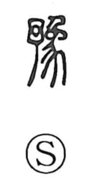

予

Uncategorized
Kun: arakajime | On: yo
in advance ・ beforehand ・ i
Explanation
The original form is 豫, a phono-semantic graph with 予 supplying the sound. Classical sources gloss 豫 as a “great elephant,” and bronze inscriptional evidence—where the graph for 猶 appears as 猷 with the sense of worship and consulting the spirits—suggests an association with divining future matters, perhaps symbolically tied to the elephant. From this notion of foreknowledge the word came to mean “beforehand, in advance,” a sense already seen in early texts such as the Mencius. In modern general-use writing, 豫 is represented by 予. Distinct from this is another graph 予, originally a pictograph of a loom’s shuttle (杼), which later also served as an alternative to 余 for the first-person pronoun “I.”